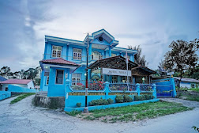
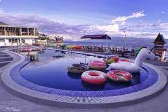
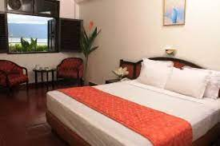
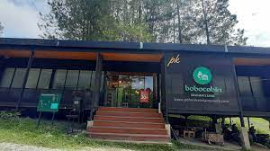
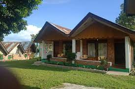
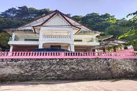
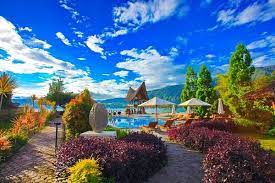
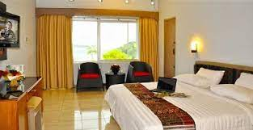

1. Adela Hotel
Hotel Adela di kota Sibarani Nasampulu, Anda akan berada 8 menit dengan mobil dari Danau Toba.Hotel ini menawarkan area khusus merokok.Manfaatkan Layanan kamar 24 jam Hotel.Fasilitas unggulan antara lain check-out ekspres, resepsionis 24 jam, dan penitipan koper. Parkir mandiri gratis tersedia di lokasi.Menginaplah di salah satu dari 30 kamar yang dilengkapi dengan televisi layar datar. Akses Internet nirkabel gratis tersedia untuk menjamin koneksi Anda; Untuk hiburan, kabel disediakan. Kamar mandi dengan shower disediakan. Fasilitas mencakup Kursi kerja dan layanan pembenahan kamar disediakan setiap hari.
2.Toledo Inn
Toledo Inn memiliki taman, teras, restoran, dan bar di Tuk Tuk. Wi-Fi gratis dan layanan kamar juga disediakan. Setiap kamar di hotel ini dilengkapi dengan lemari pakaian. Setiap kamar memiliki kamar mandi pribadi dengan shower, sementara kamar-kamar tertentu memiliki balkon dan yang lainnya juga menampilkan pemandangan pegunungan. Di Toledo Inn, kamar-kamarnya mencakup meja dan TV layar datar. Pilihan sarapan Asia dan halal tersedia setiap hari di akomodasi. Bandara terdekat adalah Bandara Internasional Sisingamangaraja XII, 130 km dari Toledo Inn.

3. Hotel Sedayu
Hotel Sedayu menawarkan kamar sederhana dengan kipas angin, meja, lantai keramik, dan TV. Kamar mandi pribadi dilengkapi engan shower. Hotel ini menyediakan akses Wi-Fi gratis di area lobi. Pantai Bebas dan Pantai Kasih juga berjarak 5 menit berjalan kaki dari Hotel Sedayu, sedangkan Pulau Samosir dapat dicapai dalam 45 menit naik feri dari properti. Bandara Polonia di Medan dapat dicapai dalam 4 jam berkendara. Restorannya menawarkan layanan kamar dan menyajikan sarapan prasmanan khas Indonesia setiap hari. Anda dapat menemukan berbagai pilihan tempat bersantap dalam 2 menit berjalan kaki dari hotel.

4.Starbeach Hotel
Starbeach Hotel terletak tepat di sebelah Danau Toba dengan pemandangan fantastis yang akan memanjakan mata pelanggan kami. Tak hanya menikmati pemandangan, pelanggan kami juga diperbolehkan merasakan kesegaran air Danau Toba tepat di depan hotel. Kami juga menyediakan penyewaan jetski dan perahu kepada pelanggan kami agar liburan mereka lebih menyenangkan.

5. Bobocabin Signature Toba
Bobocabin Signature Toba, Medan menawarkan akomodasi di Parmonangan. Resor ini menawarkan pemandangan danau, teras, resepsionis 24 jam, dan Wi-Fi gratis. Setiap kamar di resor ini dilengkapi dengan meja. Kamar-kamarnya memiliki kamar mandi pribadi dengan bidet, perlengkapan mandi gratis, dan pengering rambut. Di Bobocabin Signature Toba, Medan, setiap kamar memiliki area tempat duduk

6.OYO 2379 Hotel Sibigo
Lakukan perjalanan terbaik Anda ke Samosir dengan standar Sanitized Stays yang dijanjikan, dan nikmati Wi-Fi gratis di semua kamar. Berlokasi strategis di Samosir bagian Barat Samosir, properti ini menempatkan Anda dekat dengan atraksi dan pilihan tempat makan yang menarik. Sebagai bonus tambahan, restoran disediakan di lokasi untuk melayani kebutuhan Anda dengan nyaman.

7. OYO 92503 Penginapan dan Villa Sirait
Terletak di kota Parapat, OYO 92503 Penginapan & Villa Sirait berada 1 menit dengan berkendara dari Pelabuhan Parapat dan 6 menit dari Puncak Parapat. Hotel ini berada 0,8 mi (1,3 km) dari Danau Toba dan 7,9 mi (12,7 km) dari Bandar Siallagain.Manfaatkan Layanan kamar 24 jam Hotel.Fasilitas unggulan antara lain check-out ekspres dan staf multibahasa. Parkir mandiri gratis tersedia di lokasi.Nikmati kenyamanan rumah Anda sendiri di salah satu dari 11 kamar berpenyejuk udara yang dilengkapi dengan televisi layar datar. Televisi kabel disediakan untuk hiburan Anda. Kamar mandi dengan shower disediakan.

8. Tabo Cottages Tuktuk Lake Toba
Tabo Cottages adalah hotel yang natural dengan pekarangan hijau yang luas dan kamar sebahagian dari bahan daur ulang dari rumah tradisional. Terdapat pondok untuk santai dan menikmati pemandangan danau dan gunung, Restoran dan bakery jerman . Makanan spesial adalah prasmanan dengan khas lokal dan barat. Kopi adalah salah satu produk yang sangat kami banggakan karena kami memanggang biji kopi lokal sendiri, maka kopi di Tabo sangat segar dan harum. Sering juga kami adakan aksi linkungan bersama tamu2 dan coba memperbaiki linkungan dan fasilitas seperti jalur treking secara relawan.
